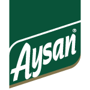
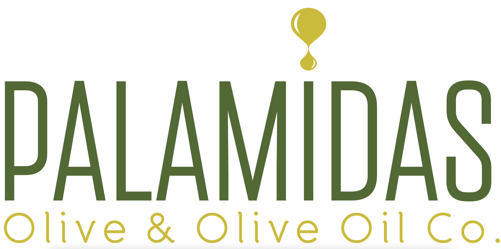
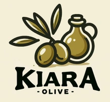

Trilye
Trilye tipi zeytinler, narin meyvemsilik ve orta yoğunlukta aromatik denge arayan tüketiciler için güçlü bir kategoridir.
Trilye odaklı zeytinyağı markaları, benzer bölgeler ve ilgili zeytin çeşitleri. 10 marka listesi.
Bu Sayfadaki Markalar
Şarköy Çiftlik
Şarköy merkezli doğal ürünler markası. Coğrafi işaretli ve soğuk sıkım zeytinyağı ürünleriyle Trakya hattında dikkat çeker....
Vivax Olea
Şarköy, Tekirdağ hattında üretim yapan marka. Kontinü sistem ve soğuk sıkım serileriyle Trakya'da öne çıkar....

Bölgesel / YerelAysan
Aysan, yerel üretim çizgisinde zeytinyağı sunan üretici olarak dizine eklenmiştir....
Efe Marmara
Bursa ve Marmara hattında Gemlik ile Trilye tipi zeytinlerden zeytin ve natürel sızma zeytinyağı üreten yerel marka....

Premium / ButikGourmet Selection Early Harvest Trilye
Gourmet Selection Early Harvest Trilye, Akhisar, Manisa hattında Trilye zeytinlerinden hazırlanan 2025 Silver ödüllü natürel sızma zeytinyağıdır....
Granpa
Marmara bölgesi odaklı üretici marka. Trilye/Gemlik hattında natürel sızma ürünleriyle öne çıkar....
Granpa Premium Trilye
Granpa Premium Trilye, Bursa, Marmara hattında Trilye zeytinlerinden hazırlanan 2025 Gold ödüllü natürel sızma zeytinyağıdır....
Olivogue
Oli Vogue'un 7 kuşak Girit mirasıyla; en iyi Trilye zeytinlerinden soğuk sıkım yöntemiyle üretilen yüksek kaliteli zeytinyağlarını bugün keşfedin....

Premium / ButikRumeli Zeytincilik
Yüksek polifenollü zeytinyağı, Soğuk Sıkım Aromalı Zeytinyağı.Nefis iri Şarköy Zeytini,soğuk sıkım aromalı gurme zeytinyağı, sofralık siyah zeytin. doğal zeytin...
Zagoda Trilye
Zagoda Trilye, Akhisar, Manisa hattında Trilye zeytinlerinden hazırlanan 2026 Silver ödüllü natürel sızma zeytinyağıdır....